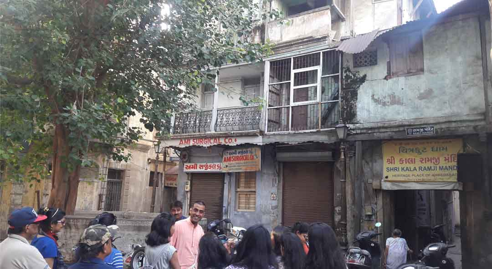

Mahurat Pol

Doshiwada ni Pol

Lambeshwar ni Pol
Khara Kuva ni Pol

Akha Bhagat no Khancho

Architecture is obviously not only about palaces, temples and forts built by kings. Building used by the common man are very much a part of architecture too. Residential precincts, known as Pols, are a typical typology of houses in various towns in Gujarat. There are literally ensembles of this so-called vernacular architecture in the old town of Ahmedabad, on the east side of the river Sabarmati. The Gujarati word "Pol" seems to have been derived from the Sanskrit word pratoli and the Prakrit word poli. Typically, a pol has one entrance and homogeneous ground of people live in it. Reflecting the rich cultural ethos of Gujarat, Pols have their geographical origins in the north of Gujarat. Originally, people of the same caste or social group would live together in an Khadki and a ground of Khadkis would make a pol. During the British period, the Ahmedabad Gazetteer had noted in 1879 that ''formerly no man could sell or mortgage a house to an outsider without first offering it to the people of the pol. Again, on wedding and other great family occasions, each household is expected to feast the whole pol, and in some cases all the men of the pol are expected to attend any funeral that may take place. If the pol rules are slighted, the offender is fined.''
There are about 600 pols in the old town of Ahmedabad alone. Many of them have colorful names, reflecting the richness of Gujarati language. These densely packed clusters of rows upon rows of houses, joined by labyrinthine streets are where the thousands of years old Indian architecture traditions continue to live. These pols sport an exuberant riot of beautiful wooden facades, lovely wooden brackets, lovingly carved fenestrated windows, magical balconies, Otlas, chabutaras (bird feeders), Khadkis and chowks. Time has bestowed beauty on this Pol architecture of Gujarat, making it as valuable as an ornament in the architecture of the world.
Prior to the fourth century BC, most of the construction activities in India were done using wood. There is no surviving proof of these wooden structures, but the sacred Rig-Veda has many names for such a house or dwelling in its text. The sacred Rig-Veda defines a house as ''a place where men and animals live.'' The wooden havelis (Gujarati Word, meaning a grand mansion for living) of Ahmedabad (also available in other cities of Gujarat) represent the splendor of this ancient tradition of architecture. Atypical haveli of Ahmedabad has a central place called a chowk, open court, from which many rooms open, where all the domestic activities are concentrated and where the members of the household gather. A typical Ahmedabad haveli generally has filigree-like work and the doorways display decorative ornamentation. Beauty flows from each square millimeter of these structures. The havelis once stood as a family's symbol of power and prestige in society. They also are the reflections of the great traditions of architecture. Every Havelis would have storm water reservoir system with a water tank to store water.
Mahurat Pol |
Doshiwada ni Pol |
Lambeshwar ni Pol |

Khara Kuva ni Pol |
Akha Bhagat no Khancho |
Desai ni Pol |